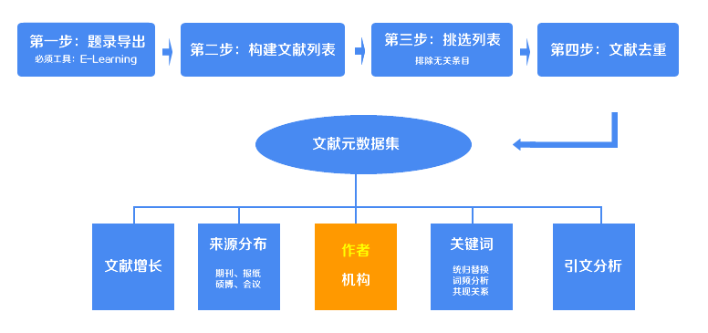
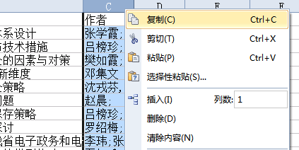
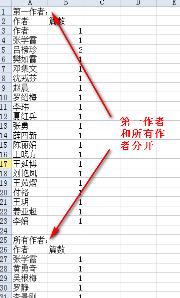

文献作者统计工具

在上一步中，你已经获得了Excel格式的文献元数据集，现在我们利用元数据集中的作者，对文献作者做统计，统计出文献来自哪些作者，并且每一个作者都发了多少篇文章，并且利用Excel制作统计图。
打开上述的Excel文件，全选“作者”一列，复制（如图）。

复制好了吗？把复制好的内容直接黏贴到下面的文本框中。
和之前你做的一样，你将得到一个经过统计好的txt文档（documents_meta_data_laiyuan.txt），直接复制txt文档中的内容到一个excel中，你可以在Excel中实现排序和筛选，利用Excel来实现数据的图形化。
注意，和来源统计一样，作者统计的结果中包含了第一作者的统计和所有作者的统计，它们被放在了同一个统计结果中，你需要自己手工把这两个部分分开处理。（如下图）

您可以使用本实验室提供的工具搭配起来，来研究作者的共现关系，先利用挑选工具把不含“;”分号的条目先排除，这样就排除了只有一个作者的文章。接着使用作者统计工具，把所有作者统计出来，只需要作者列表，不需要作者的篇数。最后利用关键词共现矩阵构建工具实现共现矩阵的构建。具体的操作方法，请阅读这篇文章。